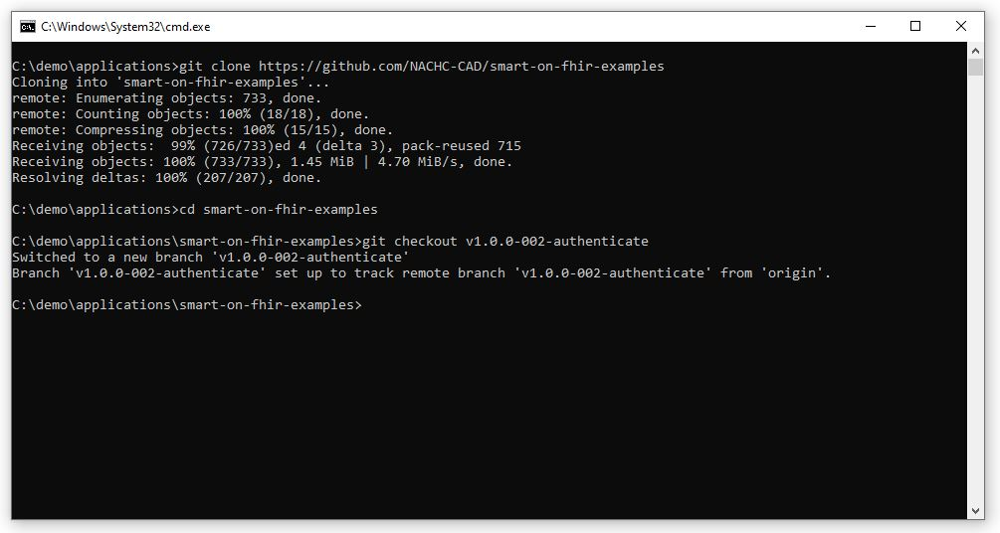
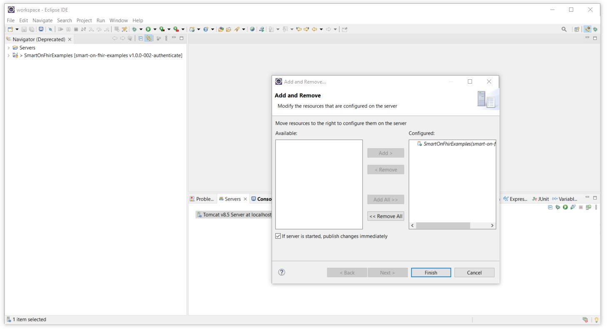
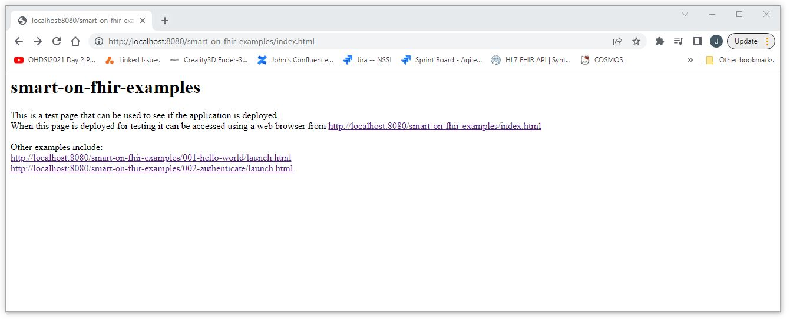
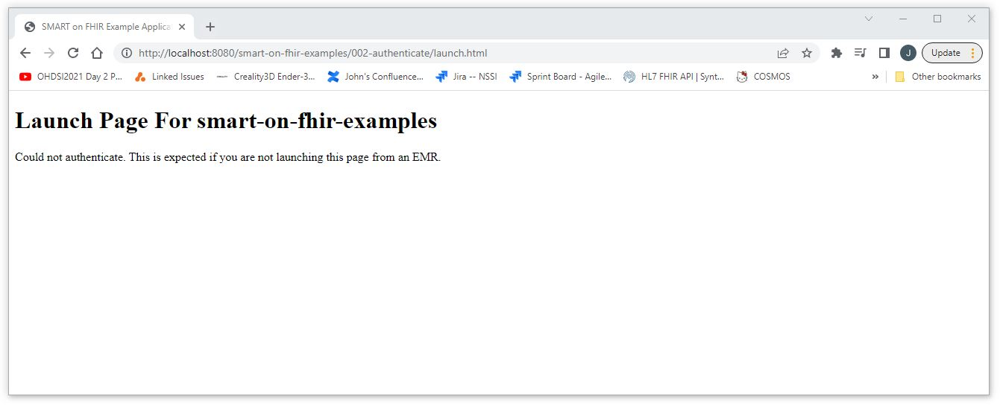
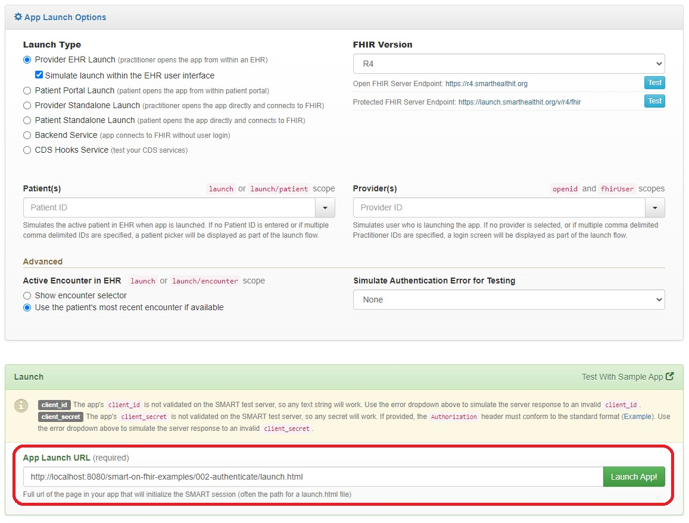
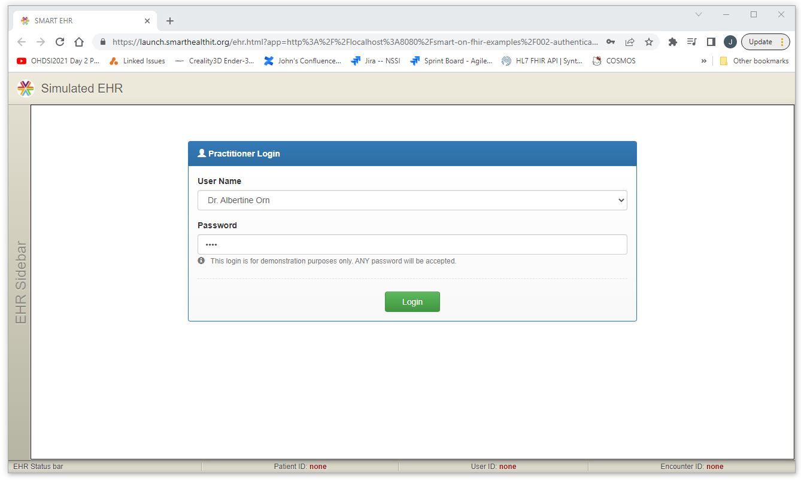
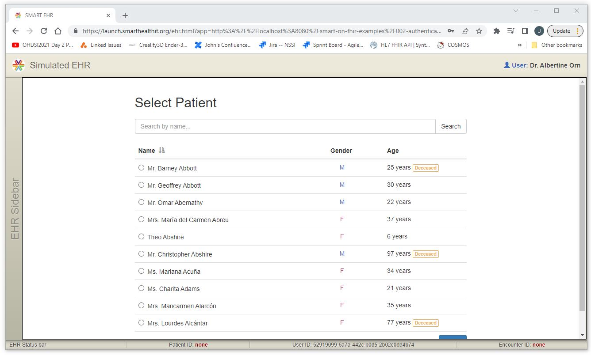
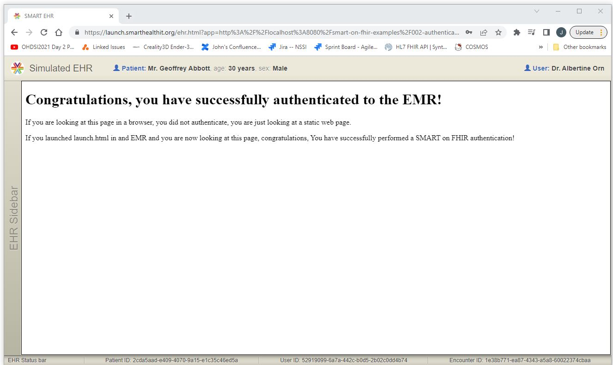

SMART on FHIR Examples: 002-authenticate
A Simple Application to Show an Application in an EMR
and Authenticate to the EMR
This section will demonstrate how to add the simplest of SMART on FHIR applications to an EMR.
This is not really a common use case of a complete application
but it does provide us with a simplest case we can use to confirm that basic functionality,
including authentication, is working properly.
Step 01: Clone and Checkout the smart-on-fhir-examples application v1.0.0-002-authenticate
The smart-on-fhir-examples application v1.0.0-002-authenticate branch can be cloned
and checked out using git by running the following commands.
git clone https://github.com/NACHC-CAD/smart-on-fhir-examples
cd smart-on-fhir-examples
git checkout v1.0.0-002-authenticate

Step 02: Add the Application to Tomcat
Use the Eclipse tools to add the application to Tomcat.

Step 03: Confirm the Application Has Been Deployed Successfully
Confirm that the application has been deployed successfully by opening a browser and entering the following url:
http://localhost:8080/smart-on-fhir-examples/index.html

Then click on the link to confirm that the launch page has been successfully deployed.
http://localhost:8080/smart-on-fhir-examples/002-authenticate/launch.html

Step 04: Launch the Application in the SmartHealthIt Test Application
The behavior of our application in an EMR can be tested
by navigating to the SmartHealthIt test application
and entering the URL of our application into the launch window.
Navigate to the SmartHealthIt test application at the URL below.
https://launch.smarthealthit.org/
Enter the URL of our application in the launch window.
http://localhost:8080/smart-on-fhir-examples/002-authenticate/launch.html

Step 05: Success!
When the Launch button is selected, you should see the sequence of screens shown below.


